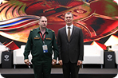

12.01.2025
Санкт-Петербург

ГТО на ПМЭФ-2025: чествование героев и чемпионов!
На Петербургском международном экономическом форуме состоялось вручение золотых знаков отличия ГТО

Министр спорта России, президент Олимпийского комитета России Михаил Дегтярёв вручил золотые знаки отличия
9 выдающимся участникам, среди которых — спортсмены, участники СВО и представители спортивных династий.
 5 сентября 2025
5 сентября 2025 Нижний Новгород
Нижний Новгород
Золотыми знаками отличия Всероссийского физкультурно-спортивного комплекса «Готов к труду и обороне» (ГТО) награждены:
Семья Фисун:
Поздравляем участников с заслуженными наградами!
На Петербургском международном экономическом форуме состоялось вручение золотых знаков отличия ГТО
На Петербургском международном экономическом форуме состоялось вручение золотых знаков отличия ГТО
На Петербургском международном экономическом форуме состоялось вручение золотых знаков отличия ГТО
На Петербургском международном экономическом форуме состоялось вручение золотых знаков отличия ГТО
На Петербургском международном экономическом форуме состоялось вручение золотых знаков отличия ГТО